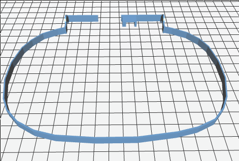
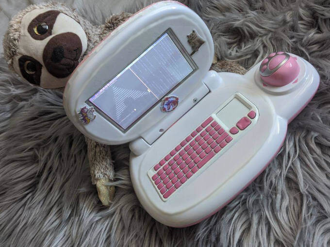

[TL;DR] I've always been jealous about those hot little mini-laptops.
So I built my own one with a Raspberry Pi and a toy laptop. Here's why and how
I did that. (It uses Arch btw.)
A very special Raspberry Pi case
Figure 1: A very special Raspberry Pi case
Every time I saw someone with one of those unnecessarily cute mini-laptops, I got
extremely jealous. But most of them are a bit too expensive for something
I'd only use to flex. Stealing is illegal, I'd probably even have to murder the
(former) owners of the stolen mini-laptop and buying acid to dissolve the bodies, renting a car to bury the remains far away from my home,
hiring a lawyer if something goes wrong (see, I had a plan...) is most likely even more expensive than buying one.
And a lot more stressful.
(That was a joke obviously, please don't call the cops ;))
So I decided to build my own one. Apart from being cheaper it comes with
another great advantage: I can build it to be as metal as I am.
Because let's be honest, something like the GPD Pocket might be cute.
But I'm not ;)
As a Black Metal fan I need something a little more...brutal.
Figure 1: How to chmod 666
Luckily I found the perfect model on eBay. Something that looks just as evil and
badass as I feel. The perfect match: the Schlaubärchen Laptop.
(German speakers start laughing now, for everyone else "Schlaubärchen"
probably still sounds pretty metal)
The actual name of this hardcore device is VTech Lern und Musik Laptop, it's
a toy laptop for children from 2 - 4.
As I said, I bought it on eBay to see if it was somehow possible to get Linux
onto it (as previously on my Kindle and calculator and almost my microwave, but
that's a different story). I didn't have high hopes, even if I would have been successful
in jail-breaking the thing, those toy laptops often have some kind of ancient
Z80 processor and to get something on that...well, let's say one lock-down wouldn't
be enough time
(not that it hasn't been done before tho: Repurposing A Toy Computer From The 1990s, SymbOS)
So I changed my plans and turned the Schlaubärchen Laptop into the most hardcore,
Black-Metal-iest, badass Raspberry Pi case ever.
How
Finally the interesting part, how:
It's not exactly difficult to slaughter a toy laptop, rip out its insides and
put a Raspberry Pi back in.
But it's more challenging than you'd expect to fit
everything together: you have the perfect USB hub at home, but all your cables
are too long, you have a matching display but not the right adapters, you find
a small keyboard but it has the wrong colour...
And just like that a "lock-down weekend project" turns into an ongoing work in progress.
Before I started building I had a few things in mind I wanted to achieve:
it should really be usable: that means keyboard and display have to
be big enough, it needs WiFi, it needs a reasonably long battery life
it has to be sturdy: it should survive being carried (and most likely thrown)
around by someone as clumsy as me without falling apart
it shouldn't look like "butchered and glued back together" too much
In case you want to have such an overly cool laptop as well, read on.
(Or you just want amuse yourself with reading about the insane effort someone put
into butchering a toy laptop)
Parts
the VTech Lern und Musik Laptop obviously: as I said earlier,
if you buy a new one, it's about 28€. On eBay it shouldn't cost more
than 15€
a Raspberry Pi: I used a Raspberry Pi Zero W (for about 11€)
because I already had one.
If you don't use the 3D printed middle part only a Pi Zero will fit into the case.
With this part you can use other Raspberry Pis as well (you
may have to add a fan then tho)
a microSD for said Raspberry Pi (size depends on which distro you
want to install, a 32GB microSD by SanDisk costs about 9€)
a 5inch LCD Touch Screen: I had this one by Waveshare for about 40€
but you could basically use whatever you want or have (and fits into
the 3D printed parts)
the Rii X1 Mini keyboard: it's pretty nice for typing, but again, you could
use whatever you want or have. If you buy a new one it costs about 18€, but
you should easily find one on eBay for not more than 10€
a "as small as possible" USB hub that's suitable for the current draw of
your hardware components (you can get one from 9€)
a 3D printed cover for the top part and the part with the keyboard
(and a middle part for bigger Raspberries)
various cables and adapters
For the power supply:
To power the PinkPad with a battery (really recommended since the 3D design
kinda requires that), we need to take some things into account for the battery
life expectation:
Basically the runtime of the PinkPad depends on the battery's capacity and
the power consumed by the hardware components.
To get the average current consumption you can either use a multimeter to
measure the current (given that there's a constant current draw), use something
like a current sensor breakout to measure power consumption over time or
very roughly estimate the result based on the used component's consumption and add a
little extra mAh to be sure (trust me, I'm an engineer):
Generally: your battery capacity in mAh /your project's
average power consumption = your expected runtime.
All Raspberry Pi models need a 5.1V power supply, the Raspberry Pi Zero W
has a recommended PSU current capacity of 1.2A and 150mA bare-board
active current consumption.
Additionally to your board, your other hardware components have current
consumption, too (e.g. the LCD touchscreen has 235mA with backlight on and 45mA
without).
What you choose as power supply is up to you (I mean, within the possible
power supplies ;)), here's what I used:
a 3.7V lipo battery with 6000mAh (because that was literally the only
one I had)
a Boost Converter: I used the Adafruit Power Boost 1000 C. It comes
with quite a few handy features, my favourite being the integrated
smart load-sharing lipoly charger. It's rather expensive with about
29€ tho.
I also added a switch to the Power Boost to power it on and off,
I have no idea what a single switch costs tho (I just assume 5€ for
a pack of switches)
I don't like it when guides praise how cheap it is to "quickly build something
as a weekend project" and then assume you have a whole electronics department at
home and live in a makerspace.
So to calculate the costs for a PinkPad I assume you don't have any of the
parts - not even a microSD or USB hub - and buy everything new (aka worst case):
159€
You should be able to get lots of the parts cheaper tho, as I mentioned, eBay is a great
place to check.
Tools
a soldering iron
a good, sturdy knife
a 3D printer (does this count as tool? Kind of I guess)
various screwdrivers
lots of glue (not sure if that's a tool either...)
pink nail polish (okay, that's really not a tool but you'll need it)
a foot file (yep, that's what I use to smoothen 3D prints (and only to
smoothen 3D prints), don't judge)
And again: if you don't have this stuff at home this can get quite expensive.
So, as with many other "cheap weekend projects", the PinkPad is only cheap
if you already have most of the stuff. (It's still awesome tho)
3D printed parts
Figure 1: VTech Lern- und Musiklaptop
As you can see from the picture of the VTech laptop, there's not really
enough space for a display or a keyboard with a reasonable size.
So I removed those parts of the case completely (that's where the sturdy knife
comes into play) and replaced them with 3D printed parts.
I'm not exactly good at 3D design, but the parts are so simple that it
won't be noticed (okay, it is noticeable but good enough for now).
And to give you an idea of what they're supposed to do/where they're supposed to go,
here's what they look like:
The part for the LCD:
Figure 1:
The middle part:

Figure 1:
You need this part if you use hardware (eg. an other Raspberry Pi than the Zero)
to have more space in the top part.
It goes between the part for the display and the pink part with the little bears
on it.
The part for the keyboard:
Figure 1:
Print Settings
It's not exactly a challenging print, there's really not much that could go wrong.
The printing speed can be high, there's no need for support.
However, to get a pretty result that doesn't look too coarse compared to the rest
of the Pinkpad, set a layer height smaller than 0.15mm.
I printed it with white PLA.
Afterwards the edges of the prints need some smoothing with sandpaper (or a foot file...seriously, that's
so much more convenient).
Software
After finding/collecting/buying/borrowing/stealing/whatever (I don't judge...) all the parts,
it's time to take care of the software.
Install Arch Linux ARM
Since the Raspberry Pi has an arm processor you need an arm image from
Arch Linux ARM. I won't write a detailed guide on installing Arch Linux
here (the instructions on the Arch Linux ARM website are quite good), just a quick summary.
I'll also just assume that you setup your SD card from Linux.
As root:
Partition your SD card (eg. with parted or fdisk):
create two partitions, the first with type W95 FAT32
Create filesystems:
FAT filesystem for the first partition
mkfs.vfat /dev/sdX1
ext4 for the second
mkfs.ext4 /dev/sdX2
Mount the filesystems
mkdir boot root
mount /dev/sdX1 boot
mount /dev/sdX2 root
Now put the SD card into your Pi, power up, log in (default user and password
are alarm and alarm or root and root for roo, so better change that
immediately ;))
Then initialise the pacman keyring and populate the package signing keys
This should be enough, but depending on your LCD touchscreen model it could be
that you have to add some lines in 99-fbturbo.conf, some also need drivers installed.
Add some nice and/or essential programs
I don't know if you noticed but I'm slightly too excited about Emacs, so
guess what I installed first ;)
Apart from Emacs I installed
herbstluftwm as window manager
gnome-terminal
LXDM as display manager
the web browser Dillo
neofetch and cmatrix for showing off purposes
And some other, less interesting stuff (you know, git and so on).
But I guess if you really want a PinkPad
you know what software you want to have on it.
Manicure for the keyboard
Figure 1: The evolution of a keyboard
As you might have noticed the Rii keyboard is black. And unfortunately
that ruins the hardcore, badass aesthetic of my soft pink PinkPad.
So I had to find a way to change that.
I tried various paints (even one specifically made for rubber) and varnishes,
I even thought about 3D printing the cover for the keyboard.
But in the end a quite simple and unexpected solution
turned out to be the best: nail polish.
Luckily I got some help from Daniela (yep, the same one who wrote that
awesome Dark Mode and CSS variables Medium article I mentioned in the
previous post).
Daniela performed several scientific nail polish experiments on rubber or
rubber-like surfaces to test which polish consistence works best.
The corresponding research paper is not yet published but I can already tell
you the results: the best option is a strong covering (not creamy or pearly) pink
nail polish by Essie together with a clear top coat.
Figure 1: Manicure for the keyboard
Different from the other things I tried, the nail polish still lasts without
a scratch (and different from the other things I can use it for my nails as well)
Fun fact: my nails never got as much attention, care or fancy stuff like a top
coat but this will change
To cover the touch-part of the keyboard while still being able to use it I took
a thin white foil, the rest of the keyboard (the frame part) is painted with white
acrylic varnish.
Soldering the switch
The Power Boost by Adafruit unfortunately doesn't come with a switch,
but it's easy to add one.
I used a "normal" (whatever that's supposed to mean here) slide switch with
three pins.
There won't be any power on the switch, it's only signalling to the Power Boost
via the ENABLE pin.
Just solder the pins of your switch to EN, VS and GND. (If you have a switch with
only 2 pins, connect them to EN and GND)
Unfortunately I don't have pics of this incredibly exciting process, but
there are detailed instructions on the Adafruit website.
Assembly
That's the easiest and yet most annoying part: putting the
parts together.
Basically this can be summarized in a few steps:
Brute force the parts of the case away where the display and the keyboard
are supposed to go. Don't be gentle. It won't be gentle with you either.
Figure 1: My battle wounds.
Glue...everything: glue the middle part well...to the middle, the keyboard
part to the bottom of the laptop and yourself to basically everything that
gets in your way. The part for the display is screwed onto the back part
of the cover later.
Figure 1: The battleground.
Raspberry Pi, USB hub and display are supposed to go into the top part,
keyboard and battery into the bottom.
Squeeze that entanglement of Raspberry Pi, USB hub, various cables and
display into the top part. Everything is allowed as long as in the end
the switch is on the same side as the hole for the switch
the connection for the charger is on the side of charger hole
the cable for the battery finds its way through the little hole
in the middle down to the bottom part
Figure 1: PinkPad intestines.
No squeezing should be necessary for the keyboard and battery, if you
were brutal enough while brute forcing your way with the knife, there
should be enough room in the bottom part.
Otherwise repeat step 1.
Figure 1: More PinkPad guts.
If everything is in place (or at least inside), close the laptop
and screw in some screws (3 is the minimum, I tried)

Figure 1: Black Metal Sloth and PinkPad.
And if you have no idea what I was talking about, just look at the pics, it should
make some sense then.
Last but not least: add some stickers because as everyone knows each sticker will
add 1MB RAM.
AND: MAKE ABSOLUTELY SURE you tell everyone you use Arch Linux on that laptop.
That's it.
The birth story of the PinkPad (I didn't come up with that name btw, someone on
Instagram suggested it ;)).
I'm really looking forward to finally being one of the cool kids at conferences
and other occasions ;)
And as the "v1" in the title suggests: it's my first attempt and a work in progress, many parts are somewhat "hacky" and need improvement.
There are some things I'd like to improve:
I plan to 3D print the key-caps for the keyboard with pink flex filament
I'd like to improve the 3D printed parts, make them smoother (and I
also tried to paint them which didn't go so well), try to get them to
fit together better
get audio somehow
get the battery status
repair the mouse (yes, that little paw used to be a mouse, but it broke :'()
But for now I'm happy with my brutal-hardcore-black-metal-badass PinkPad.